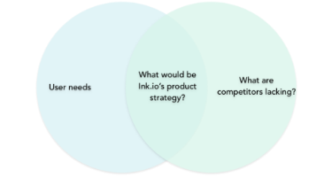
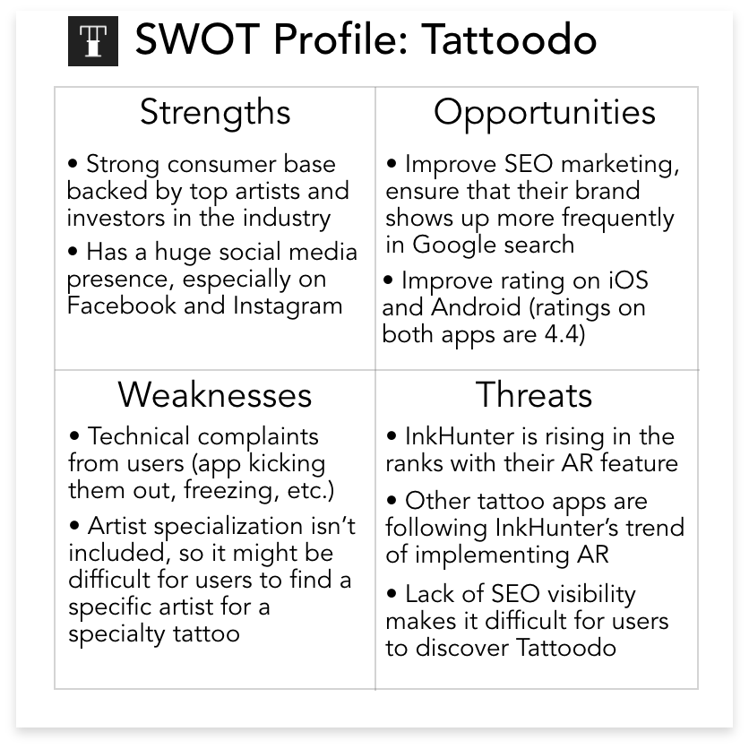
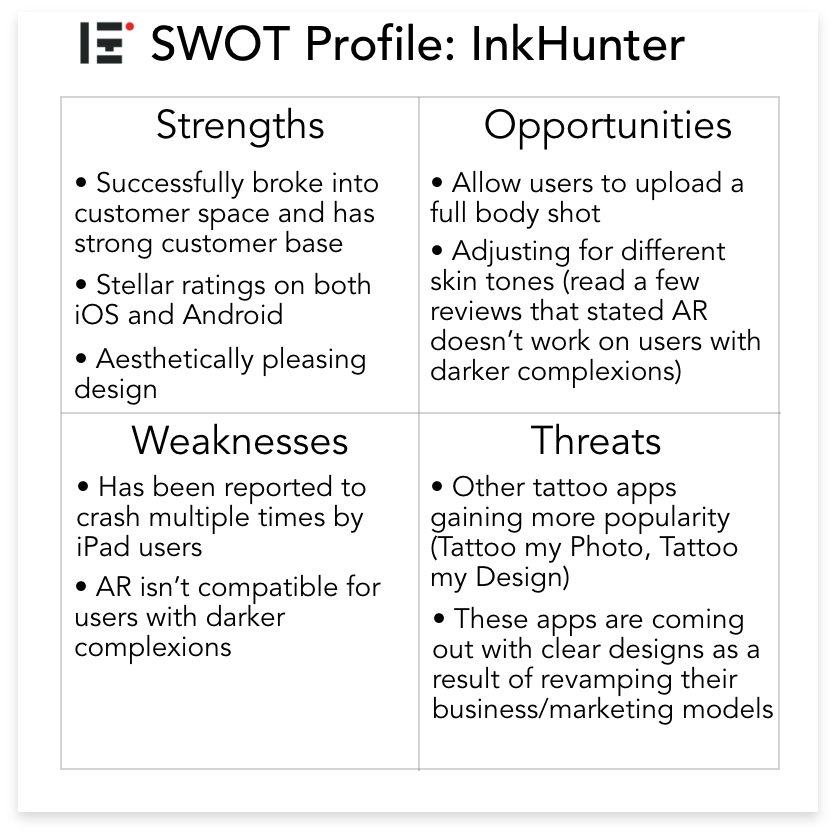

Introducing Ink.io
Context: Ink.io is the first project I completed during the UX Immersion course at CareerFoundry. A project brief was provided, but students were given the flexibility to customize their projects. I opted to create a tattoo app to explore how technology has impacted the tattoo industry and its users.
Problem: Users need a central source to find information pertinent to tattoos, such as artists, events, and studios, while being welcomed into a supportive and inclusive community.
Solution: A mobile app that centralizes tattoo-related information, in addition to allowing users to join a welcoming and inclusive community.
My role: UX Designer/Researcher
Client: CareerFoundry
Research
Competitive Analysis & User Research
To develop a better understanding of other competitor tattoo apps, I conducted analyses to make better-informed decisions on product strategy and identify underserved opportunities in the market.
  I conducted research on two main competitors, InkHunter and Tattoodo. Below are key findings.
Once I had a better understanding of tattoo competitors, I focused my research on identifying the needs of potential users. I interviewed 6 people from different demographics to understand their needs from a tattoo app.
Conceptualization
User personas, user journeys, user flows
Based on the earlier user interviews, I created three personas to represent the user group. Natasha represents the first-time tattoo enthusiast, Susan represents the regular customer, and Michael represents the careful customer who puts a lot of deliberation into each tattoo.
Now that I have my personas, I can map out the user's needs and goals. This helped me define and visualize the user's needs in order to move forward with the app's navigation.
Lo-fi prototypes
I started the design process by mapping out the overall information architecture of the app. I wanted to explore in more depth the booking consultation user flow.
After mapping out the app's hierarchy and layout, I started creating mid-fidelity prototypes in Balsamiq. The prototypes below demonstrate the signup/onboarding process, as well as the booking request process. I then ran a quick round of user testing to test if users were able to understand the process.
Usability Testing
Perform usability testing & identify improvements
Usability testing was very helpful in identifying aspects of the process that were confusing. Below are results from the testing, organized via affinity mapping into different categories.
Post affinity mapping, I identified several severe errors to take into consideration for the final design.
Final Design
After a few rounds of usability testing and several iterations, a final design was produced using Adobe XD. I revamped the visual design of the entire app by incorporating Google's material design icons consistently throughout the app, as well as overhauling the previous color palette.
I learned a lot about the principles of good design when I was making my final iterations. The color palette I initially used received a lot of confusion during the peer feedback session. In the end, I decided on several shades of blue. During the competitive analysis stage, I noted that tattoo apps tend to favor dark and heavy colors. This was a factor in my decision to add lighter hues to lighten a process wrought with heavy emotions. I wanted to put my users at ease during this processs.
Conclusion
This was my first experience designing an app utilizing UX methodology. Here are some key takeaways:
- User research is incredibly important, but more important is the way questions are asked. I had to train myself to stop asking leading questions from potential users.
- You cannot assume what the user knows and doesn't know. There were many times when I assumed a feature was intuitive, only to have it backfire on me when I realized users had no idea what a certain icon represented.
- The iterative process is real. I had to push past the mindset of completing a project and instead acknowledging that I'm doing my best work every iteration, even if that means the project is never complete.